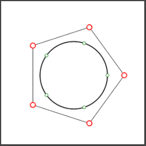
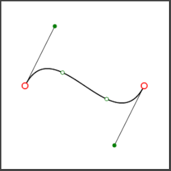

A comprehensive comparison of algorithms for evaluating rational Bézier curves
Dolomites Research Notes on Approximation (17) 3, 2024
[pdf] ·
[bibtex]

Shape control tools for periodic Bézier curves
Computer Aided Geometric Design (103), 2023
[pdf] ·
[bibtex]

New shape control tools for rational Bézier curve design
Computer Aided Geometric Design (88), 2021
[pdf] ·
[bibtex]
Awards
2023 ·
GMP best paper award · Our work on “Shape control tools for periodic Bézier curves” won the Best Paper award at the Geometric Modeling and Processing (GMP) 2023.
2019 ·
Outstanding Academic Achievement Award · Central European University, Budapest.
Teaching experience
January 2025 – · Lecturer,
Kajy University, Antananarivo, Madagascar
I am teaching in the Informatics and Artificial Intelligence degree program.
April 21 – 26, 2025 · Teacher assistant,
San Bernardino Seminar, Switzerland
This is a local seminar organized by Centro Culturale MONTEBRÈ. It focused on some hot topics in Computer Science: cybersecurity, bioinformatics, computer graphics, and neurorobotics.
2020 – Present · Teacher assistant,
Università della Svizzera italiana, Lugano, Switzerland
I am responsible for grading homework and exams, as well as conducting exercise classes for the following topics: numerical algorithms SA 2020–2021 , discrete structure SA 2021–2022 , computer vision & pattern recognition SA 2022–2023 , calculus SA 2023–2024 , SA 2024–2025 .
2019 – 2020 · Home school teacher,
Antananarivo, Madagascar
I introduced mathematical science to two home schooled kids of 6 and 8 years of age following the curriculum of Khan academy.
Scholarships, fellowships, and project funding
June 2025 ·
International Youth Talent Exchange Program · School of science, Hangzhou Dianzi University, Hangzhou, China.
2020 – 2024 ·
GRAPES fellowship· Early stage researcher, Università della Svizzera italiana, Lugano, Switzerland.
2017 – 2019 ·
Master’s Excellence Scholarship · Central European University, Budapest, Hungary.
2016 – 2017 ·
Fully funded scholarship · African Institute for Mathematical Sciences, Cape Town, South Africa.
Education
october – december 2025 ·
postdoctoral · Università della Svizzera italiana, Lugano, Switzerland.
2025 ·
phd in informatics · Università della Svizzera italiana, Lugano, Switzerland.
june 2025 ·
research visitor · School of science, Hangzhou Dianzi University, Hangzhou, China.
september – december 2022 ·
research visitor · INRIA / Geometry Factory, Antibes, France.
september – december 2021 ·
research visitor · SINTEF, Oslo, Norway.
2019 ·
msc in mathematics and its applications · Central European University, Budapest, Hungary.
2017 ·
msc in mathematical science · African Institute for Mathematical Sciences, Cape Town, South Africa.
2015 ·
bsc in mathematics · University of Antananarivo, Madagascar.